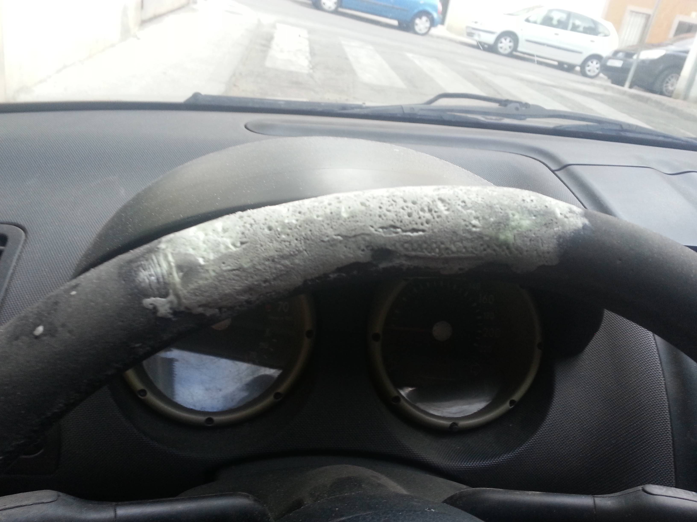

Mecanica basica
La compra de tu primer auto puede generar varias inquitudes como por ejemplo la mecanica del mismo. Por tal motivo, a continuación encontraras una serie de tips que te pueden servir de ayuda.
volante
Como podemos obsevar en las fotos tenemos dos tipos de volates. El volante más nuevo nos muestra lo poco expuesto al sol y el poco uso que tuvo. En la otra imagen, por lo contrario, podemos ver un volante gastado por el uso constante y poco cuidado. Este es un dato muy importante a tener en cuenta.
rueda
En las siguentes imagenes podemos obsevar dos tipos de cubiertas:
En la primera se puede ver una rueda gastada ya que la misma esta lisa. Estas cubiertas nos dan menos agarre a la hora de manejar y poca seguridad en el momento de frenado.
En la segunda podemos obsevar una cubierta con un color oscuro y un "dibujo" bien definido. Dichas cubiertas nos ayuda a circular con un buen agarre y frenar con mayor seguridad.

aceite
Al mirar la primera imagen, observaremos un aceite obscuro/quemado que nos produce los siguientes inconvenientes:
-Mala lubricación.
-Tapa filtros.
-Aumenta la temperatura.
-Mal funcionamiento del motor.
Para evitar lo anteriormente dicho, observemos con atencion la segunda imagen donde encontramos un aceite nuevo o con poco uso. Este tipo de aceite y cambiarlo cada 10 mil kilometros le brindara un mejor funcionamiento al auto.

vtv
La verificación tecnica vehicular es el control periodico del estado mecanico y de emisiones de gases contaminantes de los automotores. Una VTV al dia nos permite saber que el vehiculo esta en optimas condiciones.